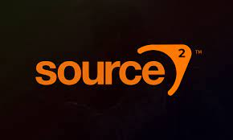

Counter-Strike 2

Source 2 pelimoottori

strike pelisarja sai uuden jälkeläisen nimellä Counter strike 2 pelimoottori muutoksen vuoksi aikasempi versio koodattiin uuten pelimoottoriin source 2 josta peli saa myös nimensä. Lisää tieto löydät alla olevasta linkistä.
Suurimpia muutoksia edeltäjäänsä
Pelissä on tapahtunut paljon muutoksia joista merkittävin on grafiikkojen parannus uuden source 2 pelimoottorin avulla
Näkymätön seinä poistettiin karttojen päältä, joka mahdollistaa uusia tapoja käyttää kranaatteja
Savu kranaatit uudistettiin ja ne peittävät hieman leveämmin kuin ennen ja toimivat uudella tavalla, niitä pystyy esimerkiksi hälventää ampumalla savua tai räjäyttämällä kranaatilla
Aseiden osto valikko muutettiin ja sen toimivuus muuttui, pystyt valitsemaan vain tietyn määrän aseita etkä voi saada enää kaikki käyttöösi